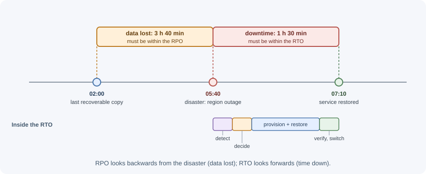

Disaster Recovery, RPO, and RTO¶
Disaster recovery (DR) is the plan and the machinery for bringing a service back after an event that its normal redundancy cannot absorb: a whole region down, a database corrupted, an account compromised, a critical provider gone. It is measured with two numbers: the recovery point objective (RPO), how much data you may lose, and the recovery time objective (RTO), how long you may be down. This lesson defines both with worked examples, shows how a business impact analysis sets them, compares the standard DR strategies (backup and restore, pilot light, warm standby, multi-site active/active) by cost and recovery time, and covers regions and availability zones, DNS failover, third-party dependencies, and what a DR plan contains.
Why it matters¶
Every architecture has a failure that takes everything down at once. For TaskFlow running in one cloud region, that could be a regional outage, an engineer's script that deletes the production database, or ransomware that encrypts every volume the attacker can reach. Without a plan, the response is improvised under maximum pressure: nobody knows which backup to use, whether the infrastructure code still works, who can approve spending on a second region, or how to tell customers.
DR is also a business decision with real money attached. Running a full second copy of production can double infrastructure cost; a plan that needs two days to restore may be unacceptable for a product whose customers run their work on it. RPO and RTO turn that trade-off into explicit, agreed numbers that engineering can design and test against.
Real-world usage¶
- AWS disaster recovery whitepaper. AWS's Disaster recovery options in the cloud describes four strategies (backup and restore, pilot light, warm standby, and multi-site active/active) in order of increasing cost and complexity and decreasing recovery time, and recommends relying on data plane rather than control plane operations during failover.
- AWS Well-Architected Framework. The reliability pillar's Plan for disaster recovery (DR) section asks teams to define recovery objectives per workload, use defined recovery strategies, test DR implementations, and manage configuration drift in the DR site.
- NIST contingency planning. NIST SP 800-34 Rev. 1, the Contingency Planning Guide for Federal Information Systems, defines the business impact analysis and the relationship between maximum tolerable downtime, RTO, and RPO used in many organizations' DR plans.
- Amazon S3 (2017). Amazon's summary of the S3 service disruption in us-east-1 shows the reach of a single-region dependency: many services in the region depended on S3, and AWS's own status dashboard could not be updated at first because it depended on the failing service.
Popular tools and providers: AWS Elastic Disaster Recovery, Route 53 health checks and Application Recovery Controller, AWS Global Accelerator, Azure Site Recovery, Google Cloud Backup and DR, MongoDB Atlas multi-region clusters, Aurora Global Database, DynamoDB global tables, Cloudflare load balancing, and Terraform for rebuilding infrastructure.
How it works¶
RPO and RTO¶

- Recovery point objective (RPO): the maximum acceptable amount of data loss, measured in time before the disaster. If the RPO is 1 hour, you must always have a recoverable copy no older than 1 hour.
- Recovery time objective (RTO): the maximum acceptable time from the disaster until the service works again for users.
- Maximum tolerable downtime (MTD): from the business impact analysis, the point after which the damage becomes unacceptable. The RTO must sit comfortably inside it.
What determines the numbers you actually achieve:
Achieved RPO ~ time since the last recoverable copy
= backup interval, or replication/log-shipping lag if data is copied continuously
Achieved RTO = time to detect + time to decide + time to provision infrastructure
+ time to restore data + time to verify + time to switch traffic
Worked example 1: nightly backups only.
TaskFlow takes a full backup at 02:00 and copies it to another region.
A region outage starts at 17:00.
Data loss: everything written between 02:00 and 17:00 = 15 hours.
Worst case (outage just before 02:00): nearly 24 hours -> RPO is 24 h
Restore in the other region:
detect and decide 20 min
terraform apply for network, cluster, app 45 min
restore 200 GB at 100 MB/s ~33 min (2,000 s)
rebuild indexes, verify, smoke test 30 min
switch DNS (TTL 60 s) and watch 10 min
total ~2 h 20 min -> RTO about 2.5 h
Worked example 2: continuous log shipping to the DR region.
Oplog captured continuously to the DR region with a typical lag of under 1 minute.
Data loss: about 1 minute of writes -> RPO about 1 min
If a database replica is already running in the DR region (pilot light):
detect and decide 15 min, promote replica 5 min, start app servers from IaC 15 min,
verify and switch 10 min -> RTO about 45 min
The second design costs more (a running replica, cross-region data transfer), but cuts the RPO from a day to a minute and the RTO by more than half.
Business impact analysis¶
A business impact analysis (BIA) decides the targets instead of letting engineers guess:
- List the business functions TaskFlow supports (sign in, create and view tasks, reminders, reports, billing) and the systems each depends on.
- Estimate the impact of losing each function over time: lost revenue, contract penalties, regulatory exposure, customer churn, and manual workarounds.
- Determine the maximum tolerable downtime and acceptable data loss per function.
- Group systems into tiers with RTO and RPO targets, and check that dependencies have targets at least as strict as what depends on them.
| Tier | TaskFlow functions | RTO | RPO | Implied strategy |
|---|---|---|---|---|
| 0 | Authentication, task create/read/update | 1 hour | 5 minutes | Pilot light or warm standby with continuous replication |
| 1 | Reminders and notifications | 4 hours | 1 hour | Backup and restore with frequent snapshots, or pilot light |
| 2 | Reports and analytics | 24 hours | 24 hours | Backup and restore, or rebuild from source data |
| 3 | Internal admin tools | 72 hours | 24 hours | Backup and restore |
Disaster scenarios differ¶
"Disaster" is not one event, and each needs a different mechanism:
| Scenario | What helps | What does not |
|---|---|---|
| Single server or disk failure | Redundancy, replicas, auto-healing | DR plan (overkill) |
| Data center (availability zone) failure | Multi-AZ deployment and database replicas | Single-AZ backups only |
| Whole region unavailable | Data and capacity in another region (any DR strategy) | Multi-AZ alone |
| Data corruption or accidental deletion | Point-in-time backups | Replication (copies the damage) |
| Ransomware or account compromise | Immutable backups in a separate account, rebuildable infrastructure | Anything the attacker's credentials can reach |
| Provider or critical SaaS outage | Fallbacks, alternative providers, graceful degradation | More replicas with the same provider |
A design that is excellent against a region outage (active/active replication) can be useless against corruption, which replicates to every region within seconds. Every DR strategy still needs point-in-time backups.
DR strategies¶
![Diagram: four strategies showing what exists in the recovery region. Backup and restore: backup copies of data, app servers not deployed, no traffic; RPO and RTO in hours; rebuild everything. Pilot light: live data replica, app servers in IaC but switched off, no traffic; tens of minutes; switch on and scale. Warm standby: live data replica, app servers running scaled down, no traffic or test traffic; minutes; scale up. Active/active: data live in every region, app servers at full scale, serving users; near zero, but corruption still needs backups. From left to right cost and complexity increase while RPO and RTO get shorter.](../dr-strategies-spectrum.svg)
| Strategy | What runs in the DR region | Typical RPO / RTO (AWS whitepaper characterization) | Relative cost | TaskFlow example |
|---|---|---|---|---|
| Backup and restore | Only backups (and IaC to rebuild) | Hours | Lowest | Snapshots copied cross-region; terraform apply builds everything on demand |
| Pilot light | Live data replication; core infrastructure defined, compute switched off | Tens of minutes | Low | MongoDB replica in the DR region; API autoscaling group at 0 instances |
| Warm standby | A complete, scaled-down, working copy | Minutes | Medium | Two small API instances running against the DR replica, scaled up on failover |
| Multi-site active/active | Full production in two or more regions, all serving users | Near zero (real time) | Highest | Users routed to the nearest region; multi-region database with conflict handling |
Notes that matter in practice:
- Backup and restore depends entirely on infrastructure as code. If the network, cluster, and services cannot be recreated by a tested pipeline, restoring data alone does not bring the service back (see infrastructure as code).
- Pilot light versus warm standby: pilot light cannot serve requests until servers are started; warm standby can serve immediately at reduced capacity and only needs to scale up.
- Active/active removes failover as an event but adds the hardest problem: writes in several regions. Options include routing all writes to one region (with fast promotion of another), partitioning writes by user, or databases with multi-region writes and conflict resolution.
- Capacity and quotas: a DR region needs enough service quota and instance capacity to take full production load, verified in advance.
- Prefer data plane operations for failover. Control planes (APIs that create or reconfigure resources) are more likely to be impaired during a regional event than data planes (serving traffic, health checks), which is why AWS recommends failover mechanisms such as health-check-driven DNS over "create resources during the disaster" where RTO is tight.
Regions and availability zones¶
- An availability zone (AZ) is one or more isolated data centers in a region, with independent power and networking, connected to other AZs in the region by low-latency links. Spreading TaskFlow's instances and database members across three AZs protects against the most common large failures with synchronous-ish replication and no DR process at all.
- A region is a separate geographic area with its own set of AZs and largely independent control planes. Multi-region designs protect against regional outages and some provider-wide issues, at the cost of cross-region latency (tens of milliseconds or more), asynchronous replication (so a non-zero RPO), data transfer charges, and data residency rules about where personal data may be stored.
Multi-AZ is the default for production; multi-region is a DR decision driven by the BIA.
DNS failover¶
The usual way to move users to the recovery region is DNS:
- Health-checked failover records (for example Amazon Route 53 failover routing): a primary record is returned while its health check passes, and a secondary record otherwise.
- TTL matters: resolvers and clients cache answers for the record's TTL, so a 1-hour TTL means up to an hour of users still going to the dead region. DR-critical records use TTLs of 60 seconds or so, set before the disaster. Some clients cache longer than the TTL.
- Anycast and global load balancers (AWS Global Accelerator, Cloudflare load balancing, Google Cloud's global load balancer) shift traffic without waiting for DNS caches.
- Automatic or manual? Automatic failover reacts fastest but can fail over on a false alarm, which itself causes data loss (RPO) and downtime. Many teams automate every step but keep the decision to a human, so failover is "one button".
- Failback is a second migration: the original region's data is now stale, so it must be resynchronized before traffic returns.
Dependencies on third parties and shared services¶
A DR region is useless if the service cannot start there. Check every dependency:
- Identity and access: can engineers log in to the cloud account and the DR region if single sign-on is down?
- Secrets and keys: are secrets and KMS keys available in the DR region (multi-region keys, replicated secrets)?
- Container images and artifacts: is the registry replicated, or does the deploy pull images from the failed region?
- CI/CD: can you deploy if the CI system or its runners are affected?
- DNS provider, CDN, email and SMS providers, payment gateways, auth providers: what are their SLAs and their own DR, and does TaskFlow degrade gracefully without them?
- Monitoring and the status page: are they outside the failed region, so you can see and communicate during the disaster?
DR plans¶
A DR plan is the document people follow when it happens. It contains:
- Scope and objectives: systems covered, tiers, RTO and RPO targets.
- Scenarios and which strategy applies to each.
- Roles and contacts: who can declare a disaster, incident roles, vendor support contacts, escalation paths.
- Decision criteria: when to fail over versus wait for the provider, based on expected duration and RPO cost.
- Runbooks: step-by-step failover, data restore, verification, and failback procedures (see restore testing and runbooks).
- Communication: internal updates, status page, customer messages.
- Dependencies and prerequisites: quotas, accounts, keys, images.
- Testing schedule and results: when the plan was last exercised and what the measured RTO and RPO were.
Keep the plan versioned, reviewed after every test and architecture change, and available outside the systems it describes (an offline copy, a separate wiki, printed for the most critical steps).
When to use and when not to use¶
| Situation | Approach |
|---|---|
| Early-stage product, internal tool, or tolerant users | Multi-AZ plus backup and restore to another region; tested yearly |
| Business-critical API with hours of tolerable downtime | Backup and restore with fast IaC rebuild, or pilot light for the database |
| Revenue-critical service with an RTO under an hour | Pilot light or warm standby with continuous replication and rehearsed failover |
| Global product needing near-zero downtime | Multi-site active/active, with point-in-time backups for corruption |
| Regulated workloads | Strategy per regulation and BIA, with documented tests and evidence |
Do not build active/active for a service whose BIA allows hours of downtime, and do not claim an RTO you have never measured in a drill.
Practical examples¶
An RPO and RTO worksheet¶
Service: TaskFlow API (tier 0) Target RTO: 1 h Target RPO: 5 min
Current design: backup and restore; nightly snapshot copied to the DR region
Achieved RPO (worst case): 24 h FAILS target
Achieved RTO (last drill): 2 h 40 min FAILS target
Proposed design: pilot light
MongoDB member in the DR region (priority 0) + continuous backup with PITR
API servers defined in Terraform, scaled to 0; images replicated to the DR registry
Route 53 failover record, TTL 60 s
Expected RPO: replication lag, p99 < 30 s MEETS target
Expected RTO: detect 10 + decide 10 + promote 5 + scale API 15 + verify 10 = 50 min MEETS target
Added monthly cost: DR database member, cross-region transfer, replicated storage
Decision: approved by <product owner>, <engineering manager>; first drill scheduled <date>
Health-checked DNS failover (Terraform)¶
# infra/dns-failover.tf
resource "aws_route53_health_check" "api_primary" {
fqdn = "api-primary.example.com"
port = 443
type = "HTTPS"
resource_path = "/readyz"
failure_threshold = 3
request_interval = 30
}
resource "aws_route53_record" "api_primary" {
zone_id = var.zone_id
name = "api.example.com"
type = "CNAME"
ttl = 60
set_identifier = "primary"
health_check_id = aws_route53_health_check.api_primary.id
records = ["api-primary.example.com"]
failover_routing_policy {
type = "PRIMARY"
}
}
resource "aws_route53_record" "api_secondary" {
zone_id = var.zone_id
name = "api.example.com"
type = "CNAME"
ttl = 60
set_identifier = "secondary"
records = ["api-dr.example.com"]
failover_routing_policy {
type = "SECONDARY"
}
}
Route 53 returns the primary while its health check (which probes the readiness endpoint from several locations) passes, and the DR endpoint otherwise. The 60-second TTL bounds how long clients keep using a dead answer. In a pilot light setup, the DR endpoint must already be able to serve, or the failover will route users to nothing; many teams therefore make the secondary switch manual until the DR stack is scaled up.
A pilot light switch in infrastructure as code¶
# infra/dr-region/api.tf (applied in the DR region)
variable "dr_active" {
description = "Set to true during a disaster to bring the API up in this region"
type = bool
default = false
}
resource "aws_autoscaling_group" "api" {
name = "taskflow-api-dr"
min_size = var.dr_active ? 3 : 0
max_size = var.dr_active ? 12 : 0
desired_capacity = var.dr_active ? 3 : 0
vpc_zone_identifier = var.private_subnet_ids
target_group_arns = [aws_lb_target_group.api.arn]
launch_template {
id = aws_launch_template.api.id
version = "$Latest"
}
}
# Failover step from the runbook: switch the pilot light on
terraform -chdir=infra/dr-region apply -var 'dr_active=true'
The network, load balancer, launch template, and database replica exist all the time; only compute is off. Because this step calls the cloud control plane, practise it and know its duration; a warm standby with instances already running removes this dependency.
Promoting a MongoDB member in the DR region¶
// mongosh, connected to the surviving DR member, ONLY when the primary region is lost
// and a majority of voting members is unreachable (the documented forced reconfiguration).
cfg = rs.conf();
cfg.members = cfg.members.filter((m) => m.host.startsWith("mongo-dr-"));
cfg.members.forEach((m) => { m.priority = 1; m.votes = 1; });
rs.reconfig(cfg, { force: true });
A forced reconfiguration can roll back writes that the lost members had but the DR member had not replicated: that loss is your real RPO. Follow MongoDB's procedure for reconfiguring a replica set with unavailable members, and plan how to rejoin the old region's members afterwards. Managed services such as Atlas multi-region clusters handle elections across regions for you.
Best practices¶
- Run a business impact analysis and agree RTO and RPO per tier with the business, in writing.
- Use multiple availability zones by default; add multi-region only where the BIA requires it.
- Keep point-in-time backups in every strategy; replication does not protect against corruption.
- Make infrastructure fully reproducible from code, including the DR region, and keep it free of drift.
- Pre-create everything a failover needs: quotas, keys, secrets, images, DNS records with short TTLs.
- Automate failover steps, keep a human decision for the trigger, and plan failback.
- Inventory third-party dependencies and their DR posture.
- Keep the DR plan outside the systems it protects, and test it on a schedule, recording measured RTO and RPO.
In production¶
- Failover worked, but users kept hitting the dead region for an hour. Detect: traffic to the DR endpoint ramps slowly; some resolvers still return the old address. Cause: a long TTL on the API record (for example 3,600 seconds) set before the incident. Fix: lower TTLs on DR-critical records in advance, or use an anycast or global load balancer.
- The DR region could not start the application. Detect: deployments in the DR region fail pulling images or reading secrets. Cause: the container registry and secrets existed only in the primary region. Fix: replicate images, secrets, and keys, and include "deploy from scratch in the DR region" in drills.
- Scaling up in the DR region failed with capacity or quota errors. Detect: autoscaling activities fail during a drill. Cause: the DR account or region had default service quotas, or the instance type was scarce. Fix: raise quotas ahead of time, allow several instance types, and keep warm capacity for tier 0 services.
- More data was lost than the RPO allowed. Detect: after failover, recent orders or tasks are missing beyond the expected window. Cause: replication lag had grown unnoticed (minutes or hours) before the disaster. Fix: alert on replication and log-shipping lag against the RPO, not just on replication being "up".
- Failback corrupted data. Detect: duplicate or conflicting records after returning to the primary region. Cause: the old primary came back and accepted writes (split brain), or was promoted without resynchronizing. Fix: fence the old primary during failover, resynchronize before failback, and script failback as carefully as failover.
- The DR plan was out of date when needed. Detect: runbook steps reference services or commands that no longer exist. Cause: the architecture changed and the plan did not. Fix: review the plan in every architecture change and run regular drills.
Important terminology¶
- Disaster recovery (DR): Restoring service after events beyond normal redundancy.
- RPO (recovery point objective): The maximum acceptable data loss, measured in time.
- RTO (recovery time objective): The maximum acceptable time to restore service.
- MTD (maximum tolerable downtime): The outage length beyond which harm is unacceptable.
- Business impact analysis (BIA): The assessment that sets recovery priorities and objectives.
- Backup and restore / pilot light / warm standby / active-active: DR strategies of increasing cost and decreasing recovery time.
- Availability zone: An isolated data center group within a region.
- Failover / failback: Moving service to the recovery site, and back.
- Split brain: Two sites both accepting writes as primary.
- Data plane / control plane: The parts that serve traffic versus the APIs that configure resources.
Common mistakes and misconceptions¶
- Setting RTO and RPO without the business, or never writing them down.
- Believing multi-AZ or replication is a complete DR strategy.
- Forgetting that active/active still needs backups for corruption.
- Planning a backup and restore strategy without tested infrastructure as code.
- Long DNS TTLs on records that must fail over.
- Ignoring third-party dependencies, secrets, images, and quotas in the DR region.
- Automatic failover on noisy health checks, causing unnecessary data loss.
- Never testing failback.
- Keeping the only copy of the DR plan in the system that just failed.
Revision questions¶
- Define RPO, RTO, and MTD, and explain how they relate.
- TaskFlow takes backups every 6 hours and copies them to another region. What is the worst-case RPO? If a region fails 4 hours after the last backup, how much data is lost? (6 hours; 4 hours.)
- A restore needs 15 minutes to decide, 40 minutes to rebuild infrastructure, 300 GB of data at 150 MB/s, 20 minutes to verify, and 5 minutes to switch DNS. What RTO can you claim? (300 GB at 150 MB/s is 2,000 s, about 33 minutes; total about 1 h 53 min.)
- Compare backup and restore, pilot light, warm standby, and active/active by cost, RPO, and RTO.
- Why does active/active not remove the need for point-in-time backups?
- What is the difference between an availability zone failure and a region failure, and which strategies cover each?
- Why should DR-critical DNS records have short TTLs, and what are the alternatives?
- List five dependencies that could stop TaskFlow from starting in its DR region.
Further learning¶
- AWS whitepaper: Disaster Recovery of Workloads on AWS
- AWS whitepaper: Business continuity plan and objectives
- Amazon Route 53: DNS failover
- MongoDB: Reconfigure a replica set with unavailable members
- NIST SP 800-34 Rev. 1: Contingency Planning Guide
- Availability and reliability in the Application Architecture section
- Next: restore testing and runbooks. Back to the backups overview.